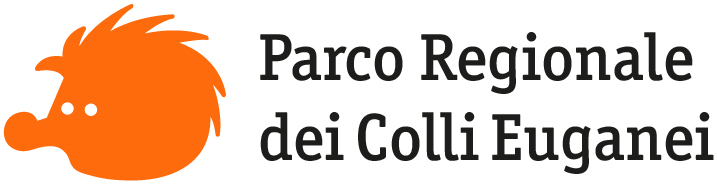

Natura
e Storia
e Storia
Vivi il
Territorio
Territorio
Contatti
 Italiano
Italiano
 English
English

Storia, Arte e Cultura
Sul territorio dei Colli Euganei sono presenti, e possono essere osservate, arcaiche testimonianze degli Antichi Veneti.
Un gran numero di reperti che documentano la storia di questo territorio, dalla Preistoria all'età Romana,
sono conservati a Este, nel Museo Nazionale Atestino. Le testimonianze più antiche, rinvenute nelle zone
del monte della Madonna e del Venda, databili al Paleolitico, sono costituite da manufatti in selce. Importanti
reperti ceramici sono quelli relativi al periodo del Neolitico (fine IV millennio a.C.), venuti alla luce
in notevoli quantità presso Castelnuovo. Armi, utensili, oggetti d'ornamento e abbigliamento, risalenti all'Età
del Bronzo (II millennio a.C.) e testimonianti la presenza di un villaggio palustre, sono stati ritrovati
in prossimità del Lago della Costa, ad Arquà Petrarca. Al II secolo a.C. risale la presenza dei Romani che,
iniziando la costruzione di una rete viaria, danno un forte impulso agli insediamenti abitativi. La via Annia,
che si staccava a Legnago dalla Emilia per dirigersi ad Aquileia, passa per Monselice, uno dei comuni del
territorio del Parco. Durante il Medioevo, nei Colli, per la loro posizione dominante, si diffusero in gran
numero di corti, pievi e fortificazioni. All'inizio del XV secolo nel territorio, che entra nei domini della
Serenissima, si inizia la costruzione di splendide dimore volute dalla nobiltà veneziana. Valsanzibio, Luvigliano
e Valnogaredo conservano notevoli esempi della civiltà delle ville. Il XIX secolo, iniziato sotto le insegne
napoleoniche e conclusosi con l'annessione al neonato Regno d'Italia, fu un secolo di grande crescita demografica
che vide un consistente sfruttamento del territorio e l'inizio dell'attività estrattiva su scala industriale.
La tutela del territorio e la salvaguardia del paesaggio, sono iniziate negli anni settanta con la dismissione
graduale delle cave, che hanno avuto la loro massima attuazione nel 1989 con l'Istituzione del Parco Regionale
dei Colli Euganei.
Il Catajo
(foto di PR Colli Euganei)
(foto di PR Colli Euganei)
"Se solo potessi mostrarti il secondo Elicona che per te e per le Muse ho allestito nei Colli Euganei! Penso proprio
che di lì non vorresti mai più andartene"
È con queste parole che Francesco Petrarca celebra gli Euganei, parlandone esplicitamente, in una lettera, la XLVI delle
Variarum, spedita all'amico Moggio di Parma. Anche se sappiamo che in nessuno dei componimenti del Poeta si fa
diretto riferimento ai Colli, alcuni studiosi ritengono che molti passi del Canzoniere abbiano l'aria di ispirarsi
al paesaggio collinare euganeo ed il suo soggiorno ad Arquà - dal 1369 al 1374, anno della morte - influenza,
soprattutto a partire dall'epoca romantica, tanti autori italiani e stranieri che hanno scritto degli Euganei.
Nel corso del Cinquecento - così come profetizza il Boccaccio (1313-1375) che nella Epistola a Francesco da Brossano
del 3 novembre 1374 parla di Arquà come del paese che avrà in sorte la notorietà del mondo legata al ricordo
del sommo poeta - Arquà e i Colli diventano quindi un luogo di pellegrinaggio letterario, che ispira liriche,
pagine ineguagliabili dei classici più amati e lettere appassionate di poeti e scrittori romantici. Tra questi
Marco Valerio Marziale, nato in Spagna nel 40 d.C, autore degli Epigrammi - opera monumentale sulla Roma imperiale
- e Claudio Claudiano, poeta della tarda antichità vissuto tra la fine del quarto secolo e i primi decenni del
quinto. La bellezza del territorio venne colta anche da Ugo Foscolo (1778-1827) e riportata in molti testi contenuti
nelle Ultime lettere di Jacopo Ortis. Percy Bysshe Shelley (1792-1822), uno dei maggiori poeti inglesi, va ricordato
poiché ci offre una personale e suggestiva visione dei Colli. Due capolavori del Romanticismo – Julian and Maddalo
(1818) e Prometeo Liberato (1820) – vennero composti da Shelley presso Villa Cappuccini a Este, dunque sullo
sfondo dei Colli Euganei. I gatti vulcanici, testo che Dino Buzzati (1916-2000) dedica ai Colli, può essere addirittura
considerato uno scritto di educazione civica: l'autore, per mezzo di un breve racconto fantastico, condanna lo
scempio perpetrato dalle scavatrici ai danni dei pendii Euganei.
Scavi archeologici Montegrotto
(foto di PR Colli Euganei)
(foto di PR Colli Euganei)
Giorgio Bassani (1916-2000), autore del Giardino dei Finzi Contini, certo più noto come narratore che come poeta, ha scritto una poesia dedicata al territorio: ha per titolo Monselice ed è tratta da una raccolta di poesie intitolata L'alba ai vetri (1963). Una descrizione poco realistica dei colli, che trascura il lato selvatico e ispido del territorio a favore di una immagine gentile e sensuale ci è offerta da Gabriele D'Annunzio (1863-1938) in Il fuoco (1900). E infine, Antonio Fogazzaro (1842-1911) nel II capitolo di Piccolo mondo moderno (1901) parla del territorio dedicando un brano che si concentra quasi tutto sull'Abbazia di Praglia.
Museo Geopaleontologico e di Archeologia Industriale Cava Bomba
(foto di PR Colli Euganei)
(foto di PR Colli Euganei)
© 2019
Parco Regionale dei Colli Euganei
Amministrazione trasparente
Responsabile protezione dati
Privacy
Note legali
Parco Regionale dei Colli Euganei
Amministrazione trasparente
Responsabile protezione dati
Privacy
Note legali
Via Rana Ca’ Mori, 8
35042 Este (PD)
Tel: 0429/632911
Fax: 0429/601368
e-mail: info@parcocollieuganei.com
pec: info@pec.parcocollieuganei.com
35042 Este (PD)
Tel: 0429/632911
Fax: 0429/601368
e-mail: info@parcocollieuganei.com
pec: info@pec.parcocollieuganei.com